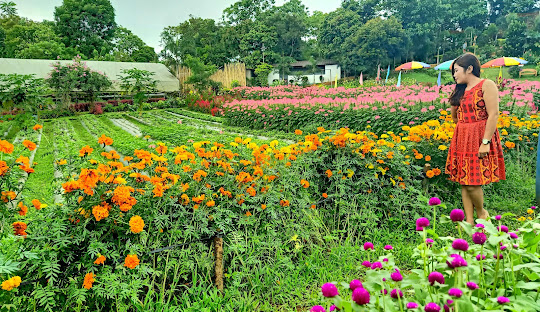

Mararison Island
White sand beaches and scenic hills

Tibiao
Adventure and outdoor experiences

Malumpati
Refreshing cold spring and nature

Rice Terraces
Scenic mountain landscapes
Aningalan
Cool climate and highland views
Aningalan, located in the municipality of San Remigio, Antique, is often referred to as the “Little Baguio” of the province due to its cool climate and mountainous environment.
Situated at a higher elevation, Aningalan offers a refreshing escape from the heat of the lowlands. It is known for its scenic views, agricultural activities, and peaceful surroundings.
The area has become a popular destination for visitors seeking relaxation, fresh air, and a connection with nature.

Aningalan is characterized by its cool climate, elevated terrain, and lush greenery. The area is surrounded by mountains and offers breathtaking views of both inland landscapes and coastal areas.
The climate supports the growth of crops such as strawberries and vegetables, making it an important agricultural area in the province.
Its natural environment provides a refreshing and relaxing atmosphere for visitors throughout the year.
Offers a refreshing escape from the heat.
Known for locally grown strawberries.
Provides scenic views of surrounding landscapes.
Ideal for relaxation and quiet trips.
Aningalan can be reached through land travel to San Remigio, followed by a trip to higher elevation areas. Roads may be steep, so travel preparation is important.
The area can be visited year-round, but mornings and evenings tend to be cooler.
Visitors are advised to bring warm clothing and be prepared for changing weather conditions.
Click a destination to explore more
White sand beaches and scenic hills
Adventure and outdoor experiences
Refreshing cold spring and nature
Scenic mountain landscapes
Cool climate and highland views